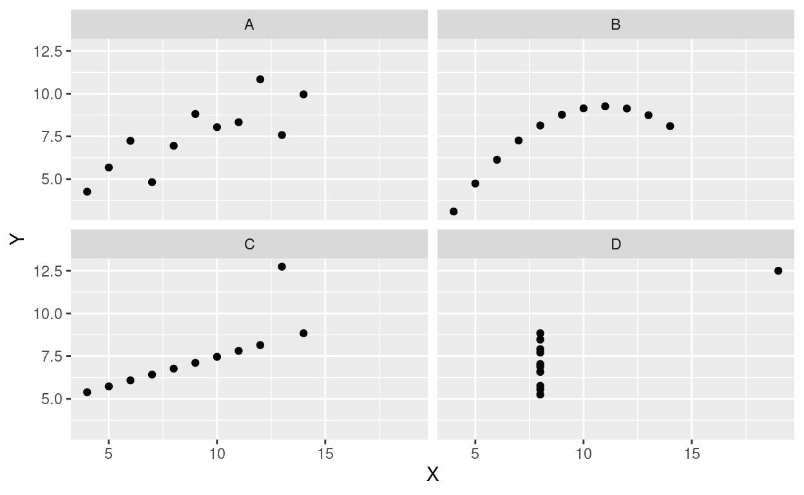
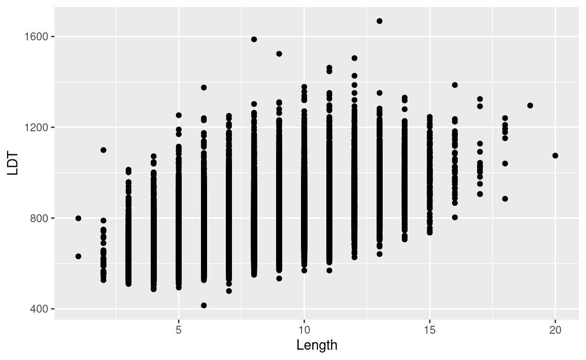
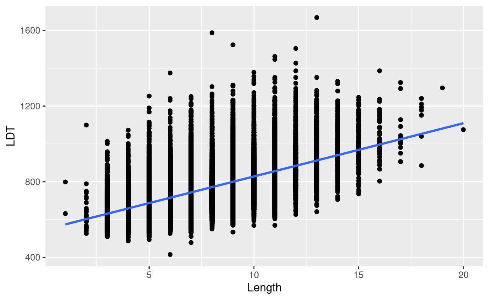

Introduction

In this session, we will use R to help us describe relationships between numerical variables. Typically, the purpose in doing so is to see how well we can predict or explain differences in a response variable in terms of differences in an explanatory variable. As we have seen, we have several useful tools to work with: scatterplots, correlation, and linear regression. We will also see, though, that we have to be careful about using these tools in order to avoid being fooled.
Always plot your data
Numerical summaries of data are extremely useful and compact
descriptions of things like central tendency and variability. We have
also seen how the Pearson correlation coefficient is a useful summary of
the strength and direction of a relationship between numerical
variables. But these numerical summaries can also be misleading, as we
shall see in the following example. The data in this example are
simulated, but representative of things that can happen in real data.
They were introduced by Anscombe, and so these data are called
anscombe in R.
Correlations for different sets of measurements
There are four groups of observations in these data. The groups are labeled “A”, “B”, “C”, and “D”. Observations were made on two variables, labeled “X” and “Y”.
head(anscombe)Using R, we can quickly get numerical summaries of these data. The code below provides the mean and standard deviation of the X and Y values in each group, as well as the correlation between X and Y in each group.
anscombe %>%
group_by(Group) %>%
summarize(Mean_X = mean(X), Mean_Y = mean(Y), SD_X = sd(X), SD_Y = sd(Y), r = cor(X, Y))From these summaries, it looks like there are basically no differences at all between the groups!
Scatterplots
Rather than a numerical summary, now let’s use R to visually
summarize these data using scatterplots. We will put the X
variable on the horizontal (“x”) axis and the Y variable on
the vertical (“y”) axis. We will use Group as a “facetting”
variable:
anscombe %>%
ggplot(aes(x=X, y=Y)) +
geom_point() +
facet_wrap("Group")
Exercise 1
Based on the scatterplots above, respond to the following questions:
- For each scatterplot, describe the relationship it seems to show between the two variables.
- For each scatterplot, say whether you think the correlation
coefficient (
r) provides a good summary of the relationship between the two variables and why.
And now for a word
Psycholinguistics is the study of the perceptual and cognitive processes involved in learning, understanding, and producing language. One of the ways psycholinguists study language processing is using a “lexical decision task”. In a lexical decision task, participants are shown strings of letters; sometimes, these make real words (like “AUTHOR”) and sometimes they don’t (like “AWBLOR”). The time someone takes to decide that a string of letters is a real word (AUTHOR) is a measure of how easily knowledge about that word can be accessed. By looking at the relationships between lexical decision time (LDT) and different properties of a word, we can begin to understand the processes by which we organize and access our knowledge of language. In other words, lexical decision time tells us how the “mental dictionary” is structured.
The English Lexicon Project has been collecting this kind of data from a lot of people with many different words in the English language. They report the mean lexical decision time for a word, along with a number of other properties of the word. We will treat the mean lexical decision time as the response variable and examine its relationships to a number of other explanatory variables.
Check out the data
In honor of the English Lexicon Project, the dataset we are using is
labeled elp.
head(elp)Each case/observation in this dataset is a particular word. In addition to lexical decision time, there are several other potential explanatory variables that have been measured for each word.
Examine the distribution of lexical decision times
The LDT variable contains the lexical decision time for
each word in the dataset. LDT is measured in milliseconds. Let us first
examine the distribution of lexical decision times.
Exercise 2
Fill in the blanks in the code below to make a histogram of lexical decision times across all words, using a binwidth of 20 milliseconds. Hint: Remember that you will need
- the name of the dataset;
- the name of the variable in that dataset that contains the lexical decision times;
- the name of the function we use to make a histogram; and
- to tell R the width of the bins we want to use.
___ %>%
ggplot(aes(x = ___)) +
___(binwidth = ___)Describe the distribution of lexical decision times across words (you can re-run the code using other binwidths if you like). Be sure to note the number of modes, skewness, and whether there are any potential outliers.
Word length explains lexical decision time
A natural research question to ask at this point is whether LDT can be explained by word length. In other words, does the number of letters in a word affect how easy it is to recognize?
Scatterplot
First, we should make a scatterplot of these two variables. Word
length is recorded in the variable named Length.
elp %>%
ggplot(aes(x = Length, y = LDT)) +
geom_point()
The scatterplot suggests a positive relationship that could be described by a line.
Overlaying a line
We can easily put the best-fitting linear regression line on top of
our scatterplot to get a visual sense of how well a linear model could
describe the relationship. To do this, we add a line called
geom_smooth(method = "lm"). geom_smooth puts
“smooth” lines or curves on our plot, and including
method = "lm" in the parentheses tells R that we
specifically want a linear model.
elp %>%
ggplot(aes(x = Length, y = LDT)) +
geom_point() +
geom_smooth(method = "lm")## `geom_smooth()` using formula 'y ~ x'
Finding the correlation
We can get the correlation coefficient using the cor
function, like we did before:
elp %>%
summarize(r = cor(LDT, Length))Finding the slope and intercept
Finally, we can get the slope and intercept of the best-fitting line.
The line of code looks a little different from how we’ve done things
until now. It is just a single line called “lm” for “linear model”. In
the parentheses, there are two instructions separated by a comma. The
first says what are the explanatory and response variables using a funky
format
[response variable name] ~ [explanatory variable name]. The
second instruction in the parentheses tells R which data to find those
variables in.
Here’s how it looks all together:
lm(LDT ~ Length, data = elp)##
## Call:
## lm(formula = LDT ~ Length, data = elp)
##
## Coefficients:
## (Intercept) Length
## 546.33 28.15The result of this line gives us the intercept of the best fitting line, as well as the slope. The slope is labeled in terms of the name of the explanatory variable.
Exercise 3
According to the line of best fit we got from running the code above, for each additional letter a word has, how much longer does it take to recognize that it is a word?
Age of acquisition explains lexical decision time
Although it makes sense that a longer word would take longer to recognize, another important aspect of a word is when it was learned. It is reasonable to think that a word that you learn early in life would be easier to access that one learned more recently.
The English Lexicon Project also records the mean “age of
acquisition” for each word. This is the mean age (in years) when someone
first learns a word. This variable is labeled
Age_Of_Acquisition in the elp data. Now, we
will follow the same steps we did for looking at the relationship
between Length and LDT, but instead of Length as the explanatory
variable, we will use “age of acquisition”.
For the following exercises, be sure to refer to code we just used to look at word length and LDT.
Scatterplot and overlaying the line of best fit
As before, let’s make a scatterplot to visualize the relationship between LDT and age of acquisition. We will also overlay the scatterplot with the line of best fit, like we did with word length.
Exercise 4
Fill in the blanks below to make a scatterplot with LDT
as the response variable (on the y axis) and
Age_Of_Acquisition as the explanatory variable (on the
x axis) with the best-fitting line on top:
___ %>%
ggplot(aes(x = ___, y = ___)) +
___() +
___(method = "lm")- How would you describe the strength and direction of the relationship between LDT and age of acquisition?
- Does the line seem to be a good fit to the data? Are there any areas where the line seems to under-shoot or over-shoot the data?
Finding the correlation
Now let’s find the correlation (again, be sure to look at the code we used in the previous section as a guide):
Exercise 5
Fill in the blanks below to find the correlation between
LDT and Age_Of_Acquisition:
___ %>%
summarize(r = cor(___, ___))- Is the correlation between LDT and Age of Acquisition stronger or weaker than the correlation between LDT and Length?
- In the ELP dataset, Age of Acquisition is measured in years and LDT is measured in milliseconds. Would the correlation between LDT and Age of Acquisition change if Age of Acquisition were measured in months and LDT were measured in seconds? Why or why not?
Finding the slope and intercept
Finally, let’s find the slope and intercept of that best-fitting regression line between Age of Acquisition and LDT:
Exercise 6
Fill in the blanks in the code below to find the intercept and slope of the line using Age of Acquisition as the explanatory variable and LDT as the response variable:
lm(___ ~ ___, data = ___)- According to the linear model you just found, how much longer would it take to recognize a word that was learned at age 10, relative to a word that was learned at age 9?
- Would it make sense to try to extend this relationship to very young ages (e.g., 6 months old)? Explain your reasoning.
- Do you expect the relationship would continue for words learned relatively later in life, like technical words you learn in college or work? If not, what shape would you expect the relationship to have for words learned later in life and why?
Wrap-up
In the last section, we saw that we can predict how long it takes to recognize a word in terms of either its length (number of letters) or the age at which it was learned (Age of Acquisition). These results tell us that the “mental dictionary” is organized not just by things like spelling, but also by life experience.
More broadly, we have seen how scatterplots, correlation, and linear regression all are valuable tools for describing relationships between numerical variables. These tools help us explain the details of behavior that reveal the structure of memory. These tools should always be used carefully and always with visualization, since numerical summaries alone can be misleading.